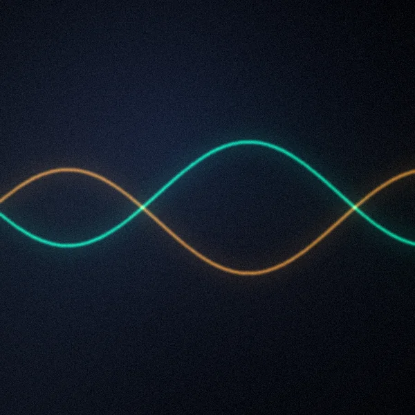
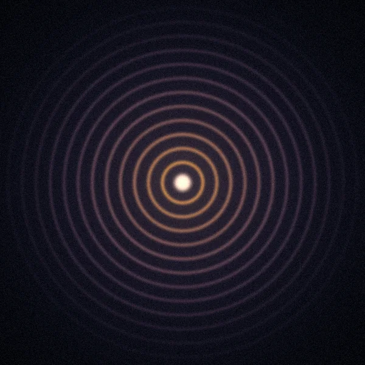
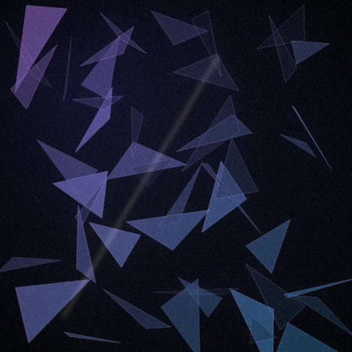
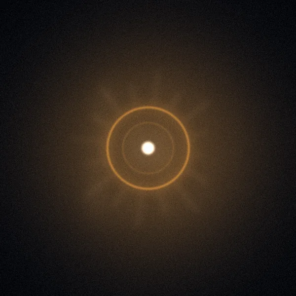
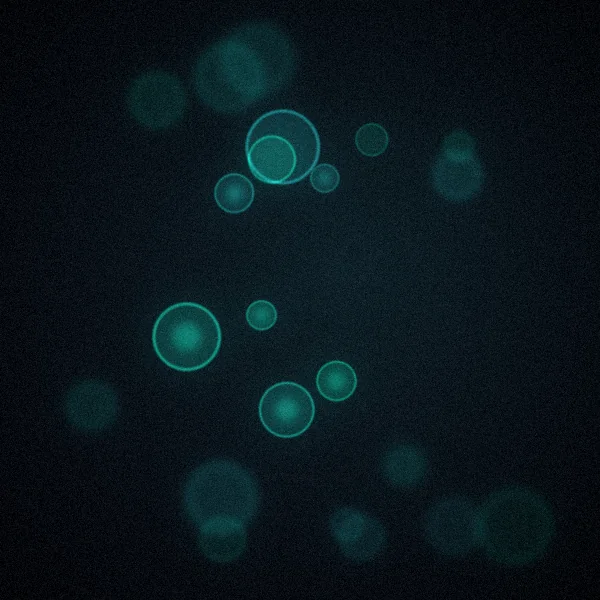
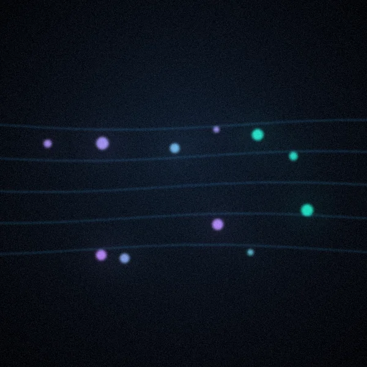
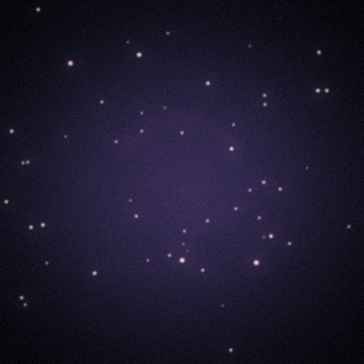
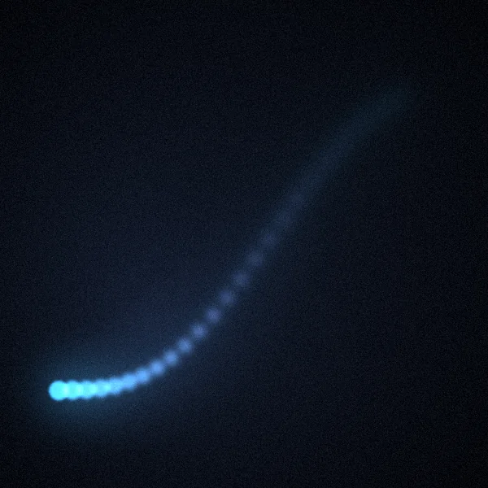

Dernière séance interrompue · 3 min écoutées sur 14
Découvrir le fonctionnement ›
Binauraux Le générateur de fréquences
Protocoles 164 protocoles · S1 nettoyage, S2 réparation
Minéraux 228 minéraux · masse molaire → fréquence
Symptômes Par symptôme, pas par produit Éveil & Chakras Solfège · chakras · voyages
Pathogènes Bactéries · virus · champignons
Mes playlists Tes listes matin et soir
Mes favoris Les fréquences mises de côté
Historique Tes dernières écoutesPage test — rien n'est installé dans l'appli.
Retour à l'application